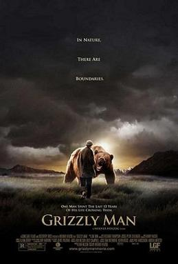

Grizzly Man

Werner Herzog
2005
104 minutes
Wikipedia link
IMDB link
TV Tropes link
This is text.
Time to choose something different:
- Some boys are into grizzly bears. And some will nearly burn their houses down building a Balzac shrine in their bedroom. Consider me the latter type! - Turn to section 148
- So, ladies, would you rather drink arsenic or get ripped to shreds by a bear? I'd probably go with the arsenic, myself. - Turn to section 239
- At least a bear would be a nice distraction from awaiting scary medical test results... - Turn to section 143